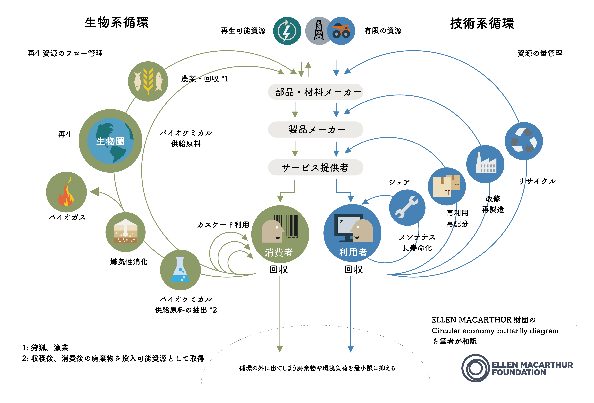

サーキュラーエコノミー
サーキュラーエコノミーとは
従来のリニアエコノミー、サイクリングエコノミーでは資源の廃棄や一部のみのリサイクルが行われていたため、廃棄物の増加や資源の減少が問題となっていた。
しかし、サーキュラーエコノミーとでは、今あるものをできるだけ長く利用したり、リサイクルをしたりして廃棄物を最小限にし、資源を循環させる経済モデルである。

・バタフライダイアグラム
サーキュラーエコノミーを表す図が蝶のような形をしているため
・左側は生物系（土から上のもの）の循環を表している。これらの資源は再生可能な資源である。できるだけ長く利用（カスケード利用）した後に循環させる。
・右側は技術系（土から下のもの）の循環を表している。石油や鉱物などは有限な資源である。シェアやメンテナンスなどを通じてできるだけ長く使い、その後、再利用、再分配、リサイクルで原材料まで戻し、循環させる。
バタフライダイアグラムは外側の方がエネルギーをつかうため、できるだけ内側で行うことが求められる。
このバタフライダイアグラムに当てはまらない製品も多く存在し、例えば衣料品は、綿とポリエステルの合成で生産されているため生物系、技術系両方の要素が存在している。
普及の問題点（グループワーク）
利用しているもの
私たちが日常的に利用しているサーキュラーエコノミーのサービスとしては、メルカリやカーシェア、チャージスポットなどが挙げられた。
利用していないものとの違い
これについて考えたところ、いくつかの要因があるのではないかと感じた。例えば、何かを購入するときにそもそも選択肢に上がらないことや、利用そのものに抵抗感があること、また自分たちにとってのメリットが感じにくいことなどである。
一方で、メルカリは安く欲しいものが手に入るし、カーシェアは車を買わずに使える。チャージスポットも、外出先で手軽に充電できるなど、分かりやすいメリットがある。
しかしサーキュラーエコノミーは、「そもそも知らない」「新品の方が品質が良いというイメージがある」「回収に出すより捨てる方が楽」「回収後にどう再利用されるのか分かりにくい」といった理由で、利用が広がりにくいと考えられる。
そのため、サーキュラーエコノミーに対する認知を広げることや、不安や先入観を減らしていくことが必要だと感じた。